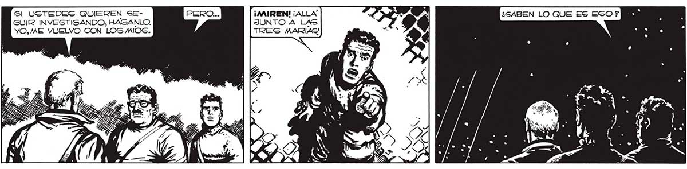
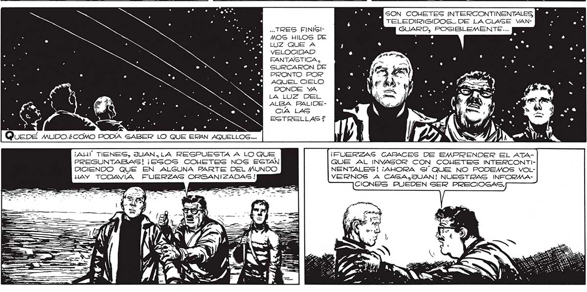

247 Sl USTEDES QUIEREN SE- ¡AAIREN! ¡ALLA GUIR INVESTIGANDO, HAGANLO. JUNTO A LAS YO, ME VUELVO CON LOS MIOS. TRES MARIAS! SON COHETES INTERCONTINENTALES, ) TELEDIRIGIDOS... DE LACLAGE VAN.. TRES FINIGI- : GUARD, POSIBLEMENTE... MOS HILOS DE LUZ QUE A VELOCIDAD FANTASTICA, SURCARON DE PRONTO POR AQUEL CIELO DONDE YA LA LUZ DEL ALBA PALIDECIA LAS ESTRELLAS ? Queoé muDo.¿como PODÍA SABER LO QUE ERAN AQUELLOS... ¡AUÍ TIENES, JUAN, LA RESPUESTA A LO QUE ¡FUERZAS CAPACES DE EMPRENDER EL ATAPREGUNTABAS! ¡ESOS COHETES NOS ESTAN QUE AL INYA3SOR CON COHETES INTERCONTIDICIENDO QUE EN ALGUNA PARTE DEL MUNDO NENTALES! ¡AHORA Sl QUE NO PODEMOS VOLHAY TODAVIA FUERZAS ORGANIZADAS ! VERNOS A CAGALJUAN! NUESTRAS INFORMWAsl CIONES PUEDEN SER PRECIOGAS.

